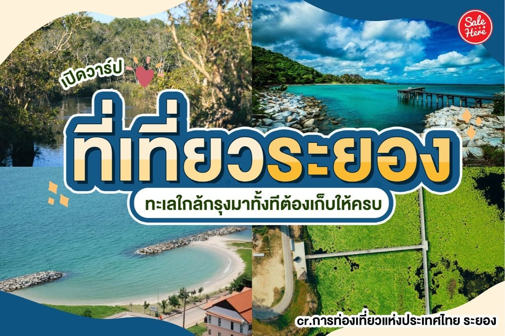

ยินดีต้อนรับสู่จังหวัดระยอง
ค้นพบสถานที่ท่องเที่ยวในระยองที่น่าสนใจและประสบการณ์ที่ไม่เหมือนใคร
ใครกำลังมองหาที่เที่ยวชิล ๆ ใกล้กรุงเทพฯ ขับรถไปเองขำ ๆ แค่ 2-3 ชั่วโมงก็เที่ยวได้แบบจุใจ “ระยอง” ก็เป็นอีกจังหวัดหนึ่งที่ตอบโจทย์เลยทีเดียว ที่รับรองได้ว่าครบครัน ทั้งทะเล หาดทราย ให้ได้เอาตัวไปแช่น้ำ ทัวร์กินในสวนผลไม้ของดีเมืองระยอง หรือเข้าวัดไหว้พระแบบสายบุญ และอีกนับไม่ถ้วน รับรองว่าเราคัดที่เที่ยวระยองมาแต่ที่เด็ด ๆ ถูกใจสายชิลชัวร์!
ไฮไลท์สถานที่ท่องเที่ยว
สวนพฤกษศาสตร์ระยอง
ใครเป็นสายเที่ยวคลีนๆ ชอบชมป่าชมใจ ตามมาเลยจ้า วันนี้เราจะพาไปเที่ยวสถานที่แห่งหนึ่งในจังหวัดระยองที่อาจจะยังไม่ค่อยแมสมากแต่ว่าสวยมาก นั่นก็คือ สวนพฤกษศาสตร์ระยอง นั่นเองจ้า 🌿
เขาแหลมหญ้า
ใครเป็นบ้างที่อยากเที่ยวชมวิวบรรยากาศของทะเล แต่ไม่อยากเล่นน้ำทะเล หลายคนในที่นี้ ก็คงมีความคิดแบบนี้ทั้งนั้น เพราะต้องการไปเสพบรรยากาศชิลๆ กินลมชมวิวของทะเล แต่ถ้าไม่รู้จะไปไหน 🚙 ขอแนะนำที่เที่ยวบรรยากาศดีใกล้กับกรุงเทพอย่าง เขาแหลมหญ้า